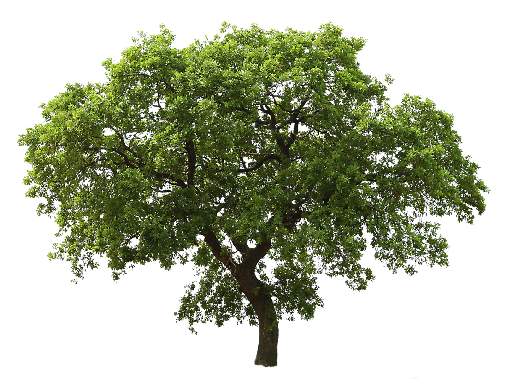

Eloísa Nieto (2000), media arts, writing, hikking, teaching and comedy enthusiast
based in Santiago, Chile
also web designer in
1000gracias studio
texto curatorial "expoweed", 2025
miradas móviles, taller de vídeo con niñes, 2025
mientras las cosas se mueven, 2024
antología previsoria, 2023
nunca vas a estar solo, 2022
no recuerdo, no olvido, 2022
cuando miro por la ventana, 2021
00tem00, 2021
quién chucha es warhol, 2021
repositorio veraniego, 2020
no me encuentro en ningún lado, 2020
limbo, 2020
exclusiva playa, 2020

eloisanieto@proton.me
itch.io
instagram
2025